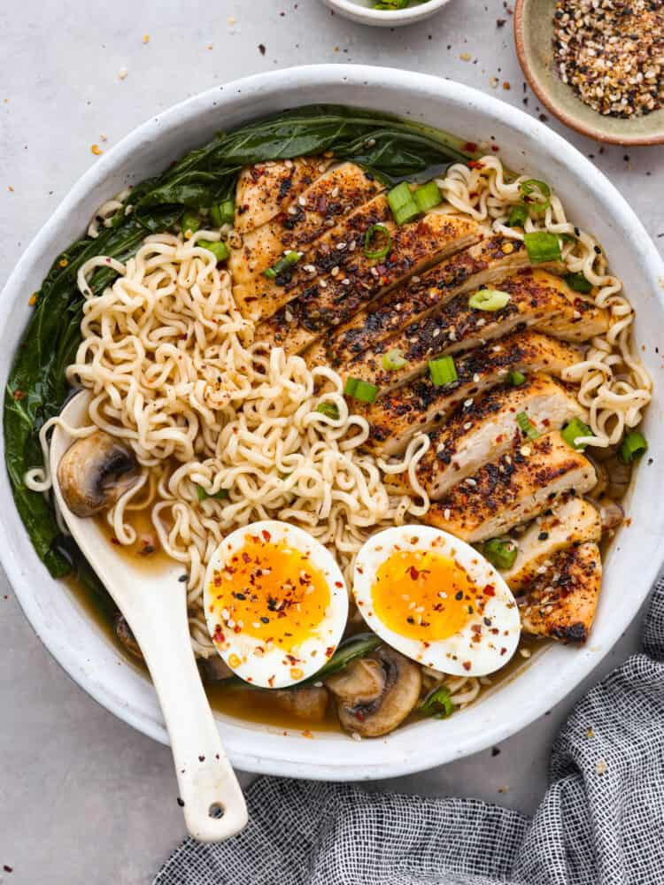

Homemade Ramen

- Sauté Vegetables: Add the sesame oil into a large pot and heat over medium heat.
Add in the garlic and ginger and sauté for 30 seconds until fragrant.
Add in the sliced mushrooms and cook for 3-5 minutes or until softened.
- Add Liquids: Pour in the chicken stock, water, and soy sauce.
- Simmer:> Then bring to a boil and simmer for about 5 minutes.
- Cook Bokchoy: Add the bokchoy and then simmer for an additional 2 minutes to soften the leaves.
- Add Noodles: Remove the pot from the heat.
Then place the ramen noodles in the hot pot of broth.
Allow the noodles to sit for ONLY a couple of minutes until they loosen and soften up.
The noodles will soften quickly, so this should be done right before serving.
- Transfer to Serving Bowls: Divide the ramen, veggies, and broth evenly into bowls.
- Add Toppings: Top the ramen with sliced grilled chicken and soft boiled eggs.
Then garnish with toppings of choice and enjoy!